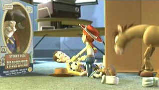

| Toy Story 2
(SE)/A,A |
| Disney/1999/92/ANA
1.77 |
This is one of the rare ones; those sequels that rival the original film.
Happily, the wonderful characters of Toy Story are animated and well once again in Toy
Story 2, finding new depth to their characters in an adventure that takes Woody and friends to
the brink of disaster.
Filmmakers John Lasseter and his Pixar wizards have provided Woody with a
wonderful script. Toy store honcho Big Al (yes, and dig those Big Al TV commercials!) discovers an
injured Woody on a yard sale treasure hunt for vintage toys. Woody is the prize he has been seeking
to complete his set of Woody's Roundup toys. He scoffs him up and sets up the
adventure of Woody's life, including a wonderfully evocative revisiting of Woody's past. That's
right folks, Woody was the star of his very own television show, Woody's Roundup, romping
through a kids adventure in each program with cowgirl Jessie, prospector Stinky Pete, and riding
atop faithful steed Bullseye to save the day. We even get to see some vintage moments from Woody's
finest days.
 |
| Jesse corrals Woody. ©Disney |
Big Al has big plans for Woody and company. He has contracted to sell
them for big bucks to a Japanese toy museum. Woody wants no part of it at first, but Jessie bats
her eyes a few times and Stinky Pete supplies some nuggets of sentimental sludge to convince Woody
that they belong together. Woody's toy friends from Andy's room have other ideas, however. Led by
the ever confident Buzz Lightyear, Potato Head, Slinky, Rex and the boys set out on a cross town
adventure to find their lost friend.
Even helpings of romance, adventure, loyalty, greed and deceit keep Toy Story
2 moving at a wonderful pace. Beautifully rendered animation and lively character voicing bring
Woody's world to life with warmth and love. Randy Newman's music adds a special layer to every
scene including the Academy Award winning song You've Got a Friend in Me son by a stalwart
Woody and Jessie's ballad, When She Loved Me.
Tom Hanks once again breaths life into the wooden toy Woody. Hanks' natural
warmth blends beautifully with his character almost turning wood into flesh in some magical trick
of actor's alchemy. Joan Cusack provides a new fix of energy as Jessie and Kelsey Grammer is simply
good enough to smell as Stinky Pete. Tim Allen once again provides Buzz Lightyear with enough
bravura to fill an aisle full of look-alikes.
Transparent is the best
way to describe the magnificent Toy Story 2 DVD. Depth of detail is nothing short of
amazing. There is no edge enhancement in this perfectly sharp DVD. The color range is rich and
vivid, yet never loses subtlety. Several scenes, unusually dark for animation, capture an
extraordinary warmth. Deep blacks shine without being compressed. Edge to edge focus is perfect.
There's theatrical punch to spare with a fine contrast range. The Dolby Digital 5:1 Surround is
outstanding, with all the clunks and plunks in the right places and the musical numbers lively with
outstanding sound stage.
This wonderful DVD is chock full of extras including audio commentary from John
Lasseter and friends, the early Pixar short Luxo Jr., a handful of outtakes and a Monsters,
Inc. sneak peak. Toy Story 2 can be purchased separately or as part of Toy Story The
Ultimate Toy Box, which includes three DVDs and many extras not included on the individual
discs.
|
|
|
|

Selections from the Feature Archive
include articles on Akira Kurosawa, Frank
Darabont, Blonde Bimbos, Hollywood Street Gangs, or Vietnam: The
Hollywood Pariah, and many more....
.jpg)
Screen Voices and style of delivery often stamp an actor's screen
image indelibly. Click the lips to read more.

The
Movie Poster Archive includes extensive poster images from the films of stars like Susan Hayward,
Kirk Douglas, Katharine Hepburn and many more. Our featured star is Danny Kaye.

Imaging Science Foundation
The Imaging Science Foundation promotes proper standards in home theater viewing. ISF trained
technicians offer monitor calibration services to consumers. The difference in a properly
calibrated monitor can be astounding. Click on the image to find an ISF member near you.
 Have you visited Home Theater
Talk lately? One of the friendliest places on the Net for Home Theater and DVD discussion, you
can get help for installation problems or simply share your opinions with other Vidiots. Have you visited Home Theater
Talk lately? One of the friendliest places on the Net for Home Theater and DVD discussion, you
can get help for installation problems or simply share your opinions with other Vidiots.

Comprehensive DVD review database. Easy to use
interface with specific region searches.

Images is a non-commercial Web site created for everyone who enjoys movies and popular culture.
Images is published quarterly; however, new reviews will appear each week, so check back often.

DiscReviews.com
is a new DVD review site
with a slick interface.
|